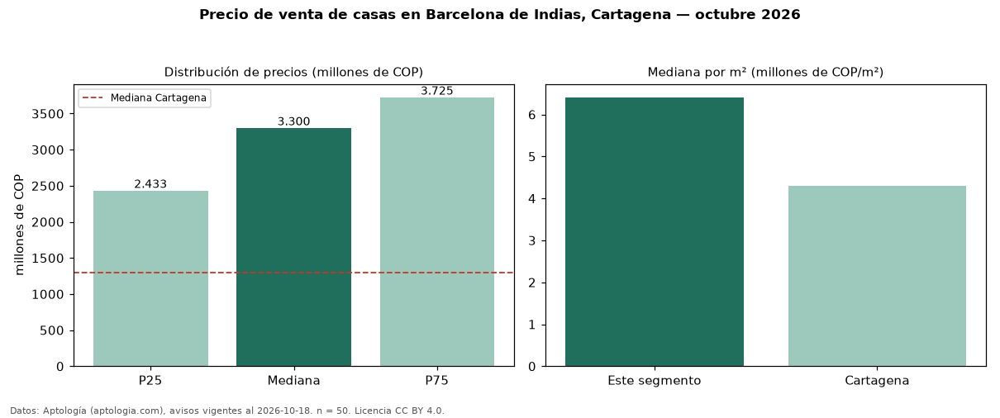

Precio de venta de casas en Barcelona de Indias, Cartagena — octubre 2026
Con 50 avisos vigentes, el precio mediano de casas en venta en Barcelona de Indias, Cartagena es COP 3,30 mil millones. Frente a la mediana de Cartagena para casas (COP 1,30 mil millones), queda 154 % por encima. Por metro cuadrado, la mediana es COP 6,41 millones/m² (n = 46 avisos con área), 49 % por encima de Cartagena (COP 4,30 millones/m²). Por precio mediano es el puesto 1 de 7 barrios de Cartagena con al menos 30 avisos de casas en venta (COP): entre las más caras. El área mediana anunciada es 450 m². El segmento con más oferta es el de 3 o más habitaciones (50 avisos, mediana COP 3,30 mil millones). La administración mediana declarada es COP 1,30 millones al mes (n = 39). El estrato más frecuente es 6 (91 % de los avisos con estrato). Datos: Aptología (aptologia.com), CC BY 4.0 — https://www.aptologia.com/casas-en-venta/cartagena/barcelona-de-indias. Archivos: PDF, CSV con las cifras y gráfica PNG.

| Avisos únicos | 50 |
|---|---|
| Percentil 25 | COP 2.433.250.000 |
| Mediana | COP 3.300.000.000 |
| Percentil 75 | COP 3.725.000.000 |
| Mediana por m² | COP 6.408.108 |
Fuente: avisos vigentes de portales inmobiliarios recopilados por Aptología, deduplicados (mínimo 30 avisos únicos por celda). Precios pedidos, no cerrados. Fecha: 2026-10-18.